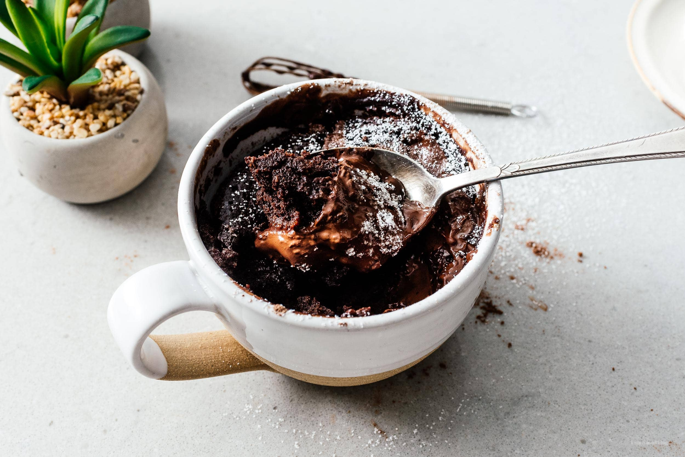

Go back
Quick Chocolate Mug Cake

Delicious, easy chocolate mug cake. What's not to love about warm cake spiked with chocolate, coconut, and chocolate chips and topped with melting vanilla bean ice cream? This literally takes less than a minute to cook up and a couple minutes to prepare.
Ingredients
- 1 large egg
- ¼ cup white sugar
- 2 tablespoons unsweetened cocoa powder
- 2 tablespoons butter, melted
- 1 tablespoon vegetable oil
- ⅛ teaspoon vanilla extract
- 1 pinch salt
- 2 tablespoons toasted sliced almonds
- 1 ½ tablespoons miniature semisweet chocolate chips
- 1 tablespoon unsweetened shredded coconut
- 3 tablespoons milk
- ¼ cup all-purpose flour
- ¼ teaspoon baking powder
- ¼ teaspoon confectioners' sugar
- ¼ teaspoon unsweetened cocoa powder, or as needed
Steps
- Whisk egg, sugar, 2 tablespoons cocoa powder, butter, vegetable oil, vanilla, and salt together in a bowl until smooth. Stir almonds, chocolate chips, and coconut into the mixture; whisk in milk.
- Place flour into a small bowl or measuring cup and stir baking powder into flour with a mini whisk or fork. Pour flour mixture over batter and whisk just until you can't see visible flour.
- Divide batter evenly between 2 coffee cups. Gently tap the cups on a work surface to eliminate air bubbles.
- Place cups into a microwave oven, one at a time. Microwave each cup on high for 45 seconds. Nothing will happen in the first 30 seconds; in the last 10 to 15 seconds, batter will begin to rise in the cup. Cooked cake will collapse after microwaving. Remove from oven and let cool, 2 to 3 minutes.
- Lightly dust each serving with confectioners' sugar and 1/8 teaspoon cocoa. Place each coffee cup onto a saucer and serve.